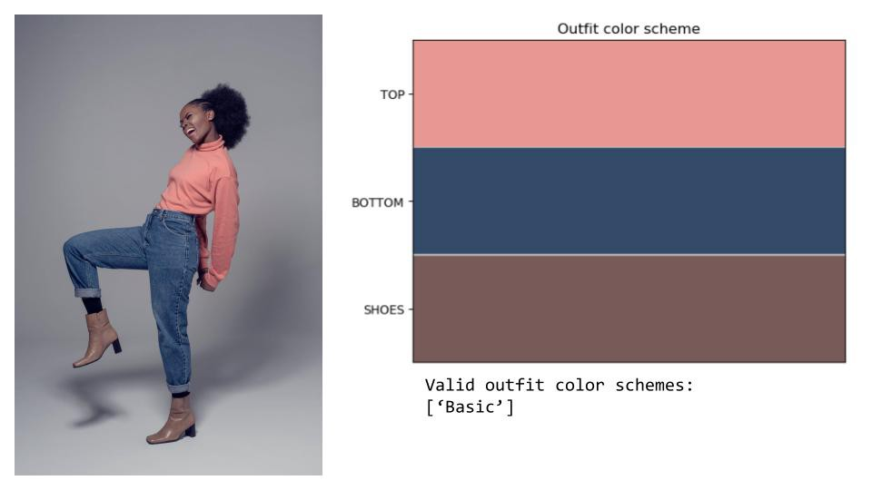

Computer Vision for Fashion Matching
Vanessa Lopez

Source: https://towardsdatascience.com/classifying-simple-color-matching-outfits-with-the-help-of-fuzzy-logic-fc9733ce8346
The topic of this tutorial is clothing identification, color, and pattern recognition from images for use in fashion matching for the visually impaired. Putting together a coordinating outfit may be challenging for people who are blind or visually impaired. This tutorial aims to provide assistance with the use of a mobile camera device and computer vision techniques to identify clothing items, recognize their dominant colors, describe patterns, and provide this feedback in an auditory manner to facilitate the process of putting together an outfit.